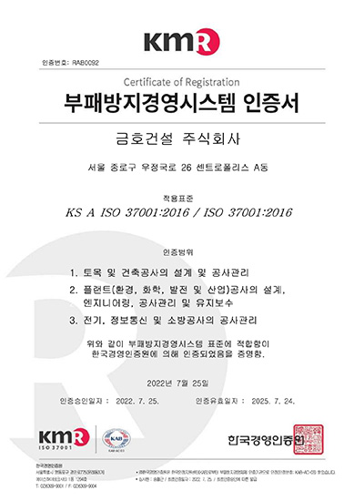

윤리경영
KUMHO E&C
Engineering & construction
금호건설은 금호아시아나그룹의 핵심경영방침 중 하나인 윤리경영을 토대로 윤리의식을 바탕으로 하는 사회와 모든 이해관계자에게 신뢰 받는 투명하고, 부조리가 없는 기업이미지를 정착시키기 위해 지속적으로 노력하고 있습니다.
아름다운 기업지수를 개발하여 지속적으로 윤리경영 수준을 제고하고 있습니다.
- 아름다운 기업은
금호아시아나가 추구하는
윤리경영의 슬로건 - 금호건설은 윤리경영이 기업생존의 필수조건일 뿐 만 아니라 궁극적으로 기업의 핵심 경쟁력이라는 확신 아래 강력한 의지를 갖고 지속적, 효과적으로 윤리경영 을 추진하고 있습니다. 금호아시아나가 추구하는 윤리 경영은 아름다운 기업의 실현을 통해 완성됩니다.
윤리규칙
-
- 공정한 경쟁 및 균등한 처우
- 임직원은 사내외에서 정정당당한 실력으로 공정한 선의의 경쟁을 하여야 하며, 정당한 사유가 없는 한 거래선에 대하여 균등한 대우를 하여야 한다.
- 임직원은 회사와 거래관계에 있거나 거래를 희망하는 업체 또는 개인에 대하여는 공정하게 기회를 제공하되, 품질 및 서비스등 거래관계에 관하여는 회사의 적정 요구수준에 부합하도록 하여야 한다.
- 임직원은 개인적인 이해관계가 있는 업체에 관하여는 상급자에게 사전 보고하여야 하며, 거래시 부당하게 영향력을 행사하여서는 안된다.
- 임직원은 성별, 학력, 종교, 신체장애 및 기타 사유를 이유로 타 임직원에게 불합리한 차별적 대우를 하여서는 안된다.
-
- 선물, 접대 및 금전거래등
- 임직원은 거래선으로부터 선물, 금품 또는 재정적 편의를 제공받거나 과도한 접대를 받을 수 없다.
- 임직원간에는 과도한 부조나 선물을 제공하여서는 안되며 이유를 불문하고 사내외에서 도박행위를 할 수 없다.
- 임직원간에는 과도한 금전거래나 대출보증을 금한다. 다만, 불가피한 경우는 서면으로 담당임원의 결재를 득하여야 한다.
-
- 임직원의 책무 및 보상
- 임직원은 최선을 다하여 직무를 수행함으로써 기업가치 극대화에 노력하여야 하며, 회사는 능력과 업적에 따라 적절하게 보상한다.
- 회사는 임직원의 자기계발을 위한 활동을 적극 장려함으로써 회사와 임직원의 성장에 기여한다.
- 임직원은 금연규정을 필히 준수하여 전 사업장의 쾌적한 환경을 유지하여야 한다.
- 회사의 자산은 개인적인 이득을 위하여 사용할 수 없다.
- 회사의 중요한 자산인 제반 노하우나 정보는 회사의 승인없이 외부로 유출시킬 수 없으며, 전 임직원은 이를 보호하기 위하여 최선을 다하여야 한다.
- 임직원은 회사의 주가나 투자자의 의사결정에 영향을 미칠 수 있는 회사에 관한 중요한 정보를 사전 허가없이 유출하거나, 주식투자등 개인의 이득을 위하여 사용할 수 없다.
- 임직원은 불법 소프트웨어를 사용하여서는 안된다.
-
- 시행
- 금호아시아나그룹의 전 임직원은 본 윤리강령 및 윤리규칙을 준수하여야 하며, 이를 위반하는 경우에는 상벌규정에 의거 인사위원회에 회부하여 중징계 처리한다.
-
- 개정이력
- 이 지침은 2002년 09월 01일부터 시행한다.(전면 개정)
- 이 지침은 2020년 08월 01일부터 시행한다.(1차 개정)
부패방지 경영방침
-
1
회사의 모든 임직원은 “부정청탁 및 금품 등 수수의 금지에 관한 법률”등 부패방지 관련 법규 및 사내 지침 등을 숙지하고, 어떠한 부패행위도 하지 않으며, 부패방지경영시스템을 준수하여 부패 발생을 방지한다.
-
2
회사는 부패방지경영을 위해 부패방지경영시스템을 구축·실행하며 이를 지속적으로 개선한다.
-
3
회사의 임직원은 부패행위를 인지하게 되는 경우 지체 없이 내부신고 절차를 통해 회사에 알리고, 회사는 관련 내용 및 신고자의 신상정보를 비밀로 유지하여 신고자가 불이익을 받지 않도록 한다.
-
4
회사는 임직원이 부패방지경영시스템을 준수하지 못하여 부패행위가 발생하였다면 회사 규정에 따라 조치를 취하도록 한다.